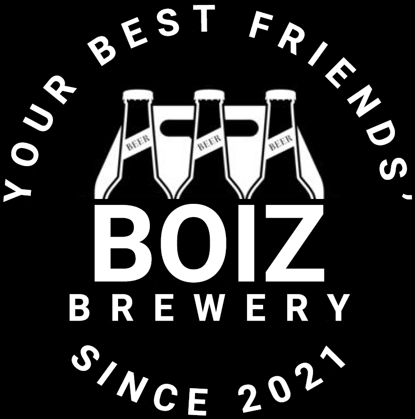

BOIZ Brewery
"Мы — некомерческая домашняя пивоварня BOIZ Brewery. Наша цель объединять людей вокруг нашего увлечения. Этот сайт просто о пиве и о событиях вокруг нашего дела. Всем Welcome!"
КАК СВАРИТЬ ПИВО?
Это видео пригодится тем, кто ещё ничего не знает о домашнем пивоварении, но хочет начать. Женя рассказывает какие есть виды домашнего пивоварения и что нужно, чтобы приготовить своё первое домашнее пиво. Мы и опытные участники нашего сообщества будем рады ответить!
02.12.21
КАК ОТКРЫТЬ ПИВОВАРНЮ
Начинающий пивовар часто не догадывается, какой путь ему предстоит. Увеличивая объёмы производимой продукции, будь то домашнее производство или серьёзная пивоварня, можно столкнуться с неизбежными проблемами, вроде отсутствия места, необходимых условий или оборудования.
15.01.22
КАК ВЫБРАТЬ ПИВОВАРНЮ?
Дениса пивом не пои - дай поговорить о домашних пивоварнях. Он изучил их все и изложил свои знания в этом коротком получасовом ролике, для тех, кто не хочет тратить время и разбираться как выбрать пивоварню.
03.03.22
ГОТОВИМ МЕДОВУХУ
"Как сделать вкусную медовуху дома?" - самый частый вопрос, по которому просили снять видео, и вот наконец-то я рад показать вам классический рецепт варёной медовухи. То, что мы сделаем сегодня - это основа, та база, которую необходимо научиться делать, прежде чем пытаться разнообразить вкус получившейся медовухи разными специями, хмелем и так далее.
11.04.22
ТЕМНОЕ И СВЕТЛОЕ
Резаное пиво — смесь темного и светлого сортов, которые наливают в кружку последовательно, в два слоя. При этом можно наливать как с четкой границей между слоями, так и просто смешивать пиво пополам, как получится.
19.05.22
СТРИМ: Любимое пиво
Стрим с подсписчиками, где мы обсудим ваши предпочтения, обменяемся топами и поговорим про то, как выбрать свой любимый сорт.
10.06.22